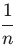
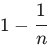
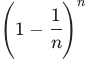
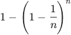
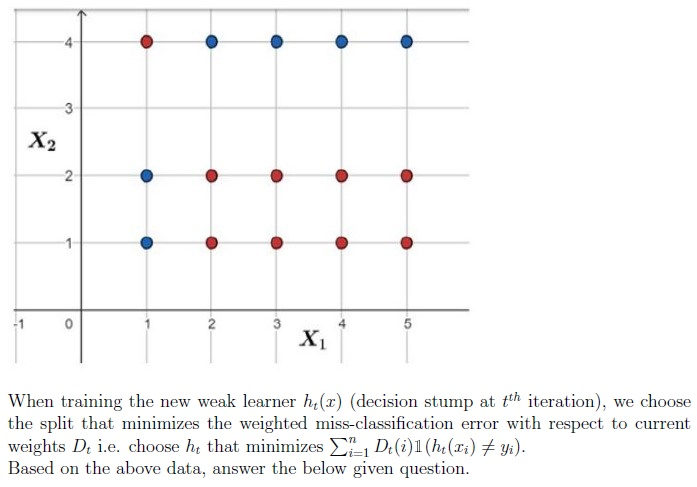
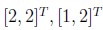
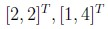
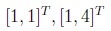
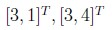

Home / MLT / Week 11 / Real questions
MLT week 11 - real exam questions
16 questions pulled from past papers whose wording matches this week's topics, newest first, duplicates removed. Pick your answers, then press Check answers. Figures and answer keys are the originals.
Elapsed 00:00
Which of the following statements about bagging are correct?
- Bagging reduces the variance of the ensemble's prediction.
- Bagging substantially reduces the bias of the base learner.
- Bagging tends to help most when the base learners are diverse (weakly correlated with one another).
- Bagging tends to help most with high-variance, low-bias base learners such as deep, unpruned decision trees.
- averaging all base learner reduces variance, if every base learner produces identical predictions.
In the context of bagging, consider a dataset of size  . A bag is a set of points that is obtained by sampling uniformly at random from the dataset with replacement. Which of the following represents the probability that a data-point
. A bag is a set of points that is obtained by sampling uniformly at random from the dataset with replacement. Which of the following represents the probability that a data-point  is not a part of the bag?
is not a part of the bag?
. A bag is a set of points that is obtained by sampling uniformly at random from the dataset with replacement. Which of the following represents the probability that a data-point is not a part of the bag?



Which of the following statements is correct?
- Bagging reduces variance, Boosting reduces bias
- Bagging reduces bias, Boosting reduces variance
- Both reduce only variance
- Both reduce only bias
In a random forest classifier with  total features, each split is chosen by evaluating a randomly selected subset of
total features, each split is chosen by evaluating a randomly selected subset of  features. Consider how changing affects the behavior of the forest. Which of the following statements are correct?
features. Consider how changing affects the behavior of the forest. Which of the following statements are correct?
total features, each split is chosen by evaluating a randomly selected subset of features. Consider how changing affects the behavior of the forest. Which of the following statements are correct?- Increasing reduces the correlation between any two trees in the forest.
- Decreasing reduces the correlation between any two trees in the forest.
- If is too small, individual trees may underfit the data.
- Increasing always decreases the variance of the random forest model.
- Decreasing makes trees more similar to each other.
Comprehension passage for this question
Consider the following one-dimensional dataset with binary labels  .
.
 AdaBoost uses decision stumps as weak learners. Assume the initial distribution of the dataset assigns equal weights to all data points, i.e.,
AdaBoost uses decision stumps as weak learners. Assume the initial distribution of the dataset assigns equal weights to all data points, i.e.,
 , for
, for  . At iteration
. At iteration  , AdaBoost chooses the decision stump
, AdaBoost chooses the decision stump
 Based on the above data, answer the given subquestions.
Based on the above data, answer the given subquestions.After AdaBoost updates the sample weights for iteration  , which pair of points will have the smallest (and equal) weights while training the second stump
, which pair of points will have the smallest (and equal) weights while training the second stump  ?
?
, which pair of points will have the smallest (and equal) weights while training the second stump ?- Points 1 and 2
- Points 3 and 4
- Points 3 and 5
- Points 1 and 5
Weak learners used in the ensemble method typically perform slightly better than random guessing.
- TRUE
- FALSE
Which of the following statements are true for bagging?
- The final model has lesser variance than the individual learners.
- The final model has a higher variance than the individual learners.
- Estimators in bagging can be trained parallely.
- If the number of data points is large, typically two-third of the data pointsremain unselected in bags.
In each round of AdaBoost, the weight for a particular training observation is decreased from round t to round t + 1 if the observation was:
- classified incorrectly by the weak learner trained in the round.
- classified correctly by the weak learner trained in the round.
- classified incorrectly by a majority of the weak learners trained up to theround.
- classified correctly by a majority of the weak learners trained up to the round.
Which of the following options are correct? Select all that apply.
- Underfitted models generally have less bias and high variance.
- A decision tree with the maximum possible length may lead to overfitting.
- Weak learners are those whose performance is slightly better than therandom classifier.
- All the estimators in bagging can be trained parallelly.
Which of the following options are not correct? Select all that apply.
- Underfitted models generally have less bias and high variance.
- A decision tree with the maximum possible length may lead to overfitting.
- Weak learners are those whose performance is slightly better than therandom classifier.
- All the estimators in bagging can be trained parallelly.
Match the characteristics given below with the appropriate ensemble technique. 1. Decision stumps 2. Deep decision trees 3. Parallel execution 4. Sequential execution
- Bagging → (2), (3); Boosting → (1), (4)
- Bagging → (1), (4); Boosting → (2), (3)
- Bagging → (1), (3); Boosting → (2), (4)
- Bagging → (2), (4); Boosting → (1), (3)
Consider the following two-dimensional dataset with two classes: +1 for blue points and -1 for red points. An AdaBoost algorithm was run on this dataset using decision stumps as weak learners.

Consider the following two-dimensional dataset with two classes: +1 for blue points and -1 for red points. An AdaBoost algorithm was run on this dataset using decision stumps as weak learners. To train the second decision stump, which pair of points will be assigned equal weights to create the training data-set?



Which of the following statements are correct?
- Overfitting models have high bias and low variance.
- Underfitting models have low bias and high variance.
- Generally, weak learners in the random forest tend to overfit.
- If the performance of each estimator in the bagging algorithm is almostidentical, the benefit of using bagging to combine them may be minimal or insignificant.
- In random forests, multiple decision trees (estimators) are trainedsimultaneously, allowing for parallel processing and faster model training.
Choose the correct statements.
- If the performance of each estimator in the bagging algorithm is almostidentical, the benefit of using bagging to combine them may be minimal or insignificant.
- Weak learners have low bias and high variance.
- In random forests, multiple decision trees (estimators) are trainedsimultaneously, allowing for parallel processing and faster model training.
- In the random forest algorithm, multiple decision trees are trained on thesame dataset to create an ensemble model.
Which of the following estimators are more likely to be preferred for bagging? Select all that apply.
- A decision stump
- A decision stump with randomly selected features for splitting the nodes
- k -NN classifier with a smaller value of k.
- k-NN classifier with a larger value of k .
- A fully grown decision tree with randomly selected features for splitting thenodes
In a random forest model let p < m be the number of randomly selected features that are used to identify the best split at any node of a tree. Which of the following are true? (m is the original number of features)
- Increasing p reduces the correlation between any two trees in the forest.
- Decreasing p reduces the correlation between any two trees in the forest.
- Increasing p increases the performance of individual trees in the forest.
- Decreasing p increases the performance of individual trees in the forest.